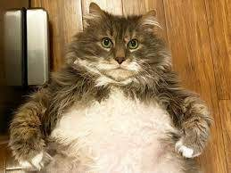
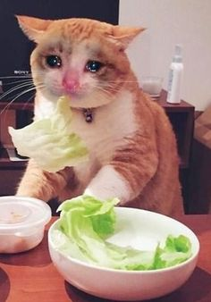
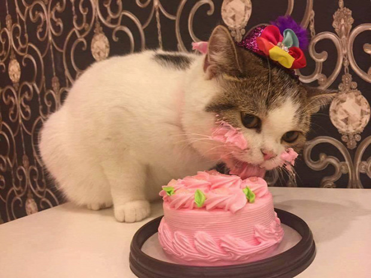
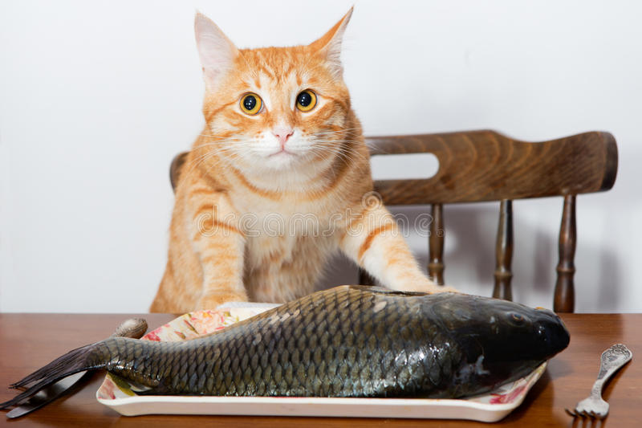

Nem ugatnak és nem harapják meg a betörőt, ez tény. De kiváló hallásuknak köszönhetően a szokatlan, apró zajokat sokkal előbb érzékelik mint mi, emberek. Így a hirtelen felriadó, figyelő pózba merevedő macska jelezheti, ha idegen mászkál a lakása előtt vagy netán valaki a zárral matat. Képes számunkra jelezni az idegen betolakodókat, és felkészíteni rájuk.
A kulcscsontjuk nem rögzül a csontvázhoz, ennek köszönhetően képesek arra, hogy a teljes testük átférjen egy akkora nyíláson, ahol a fejük átfér. Ráadásul a bőrük rugalmassága lehetővé teszi számukra, hogy szembe forduljanak egy másik ragadozóval, még akkor is ha a bőrénél fogva ragadják meg őket.
Az emberek nagy része úgy gondolja, hogy a macskának szüksége van a tejre, ám éppen az ellenkezője igaz! Szervezetük nem, vagy csak csekély mértékben képes lebontani a tejcukrot, ezért a tejet ivó macskáknál hasmenés alakul ki. Állatra válogatja, mekkora mennyiségű tej elfogyasztása okoz hasmenést, de a legjobb, ha egyáltalán nem ad tejterméket a macskájának!
Mivel a macskák ragadozók, és nem igazán fogyasztanak szénhidrátban gazdak ételeket, ezért nincs szükségük arra, hogy érezzék az édes ízt, és a nyelvükről hiányoznak is az megfelelő receptorok. És nemcsak, hogy nincs értelme nekik édességet adni, de kimondottan káros is lehet, mivel az emberekhez hasonlóan a macskáknál is kialakulhat a cukorbetegség!
A vadon élő macskák kizárólag nyers húst esznek, de a prédájukat mindenestül, annak beleiben lévő növényi maradványokkal együtt elfogyasztják, így jutnak hozzá olyan tápanyagokhoz is, ami a húsban alapvetően nincs benne. Szóval nem tesz jót kedvencének, ha csak hússal eteti, mert ez hiánybetegségek kialakulásához vezethet.
